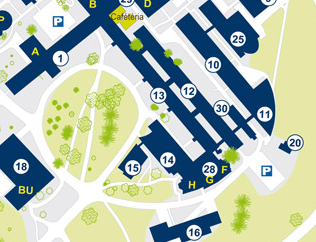

N’hésitez pas à nous poser vos questions à l’adresse principale de l’association.
Nous nous efforçons de maintenir le local ouvert sur nos heures libres (et croyez-nous ça nous prend du temps, jusqu’à doubler nos heures à la fac!). Vous pouvez ainsi être sûrs de nous croiser le midi ainsi que - certains jours - en fin de journée.
Notre local se trouve peu après le local de Scinapse, entre la cafétéria et les amphi F, G et H. Sur la carte, cela correspond au point 13 :
